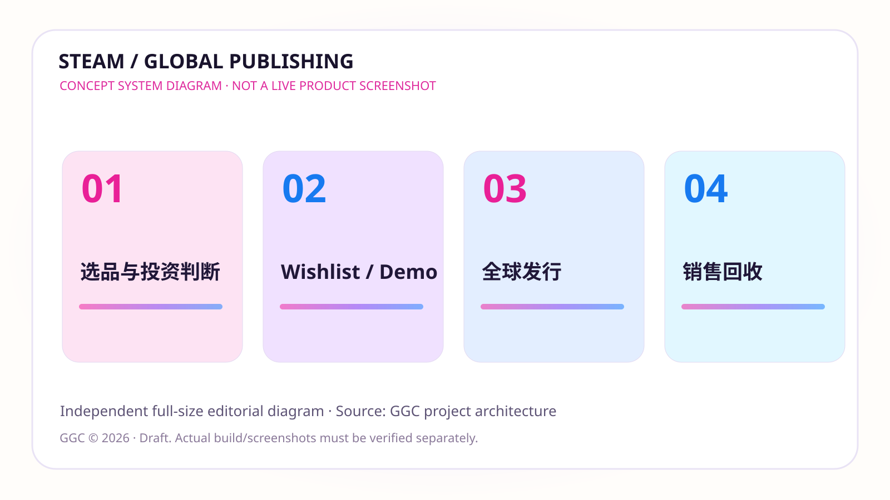
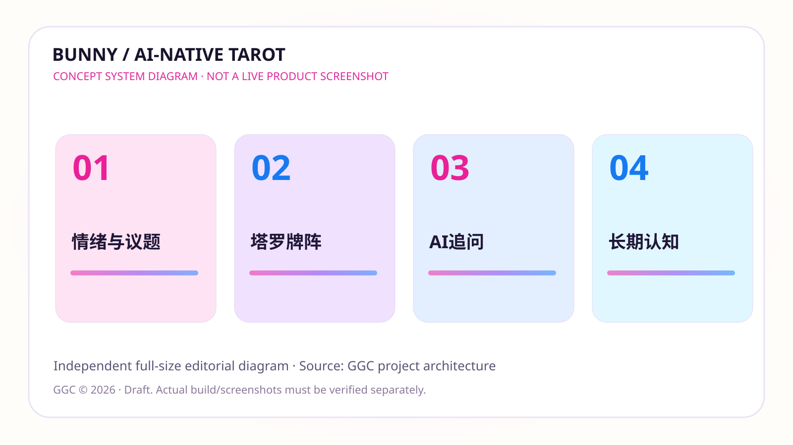
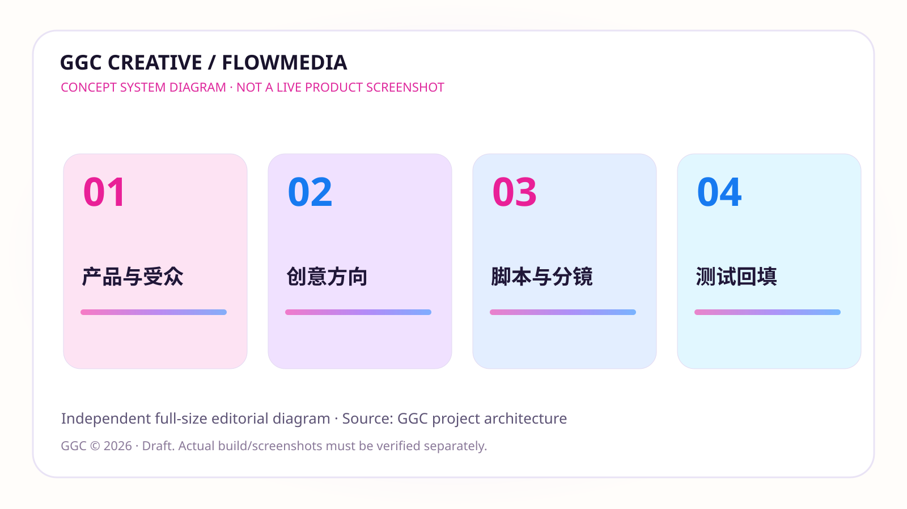
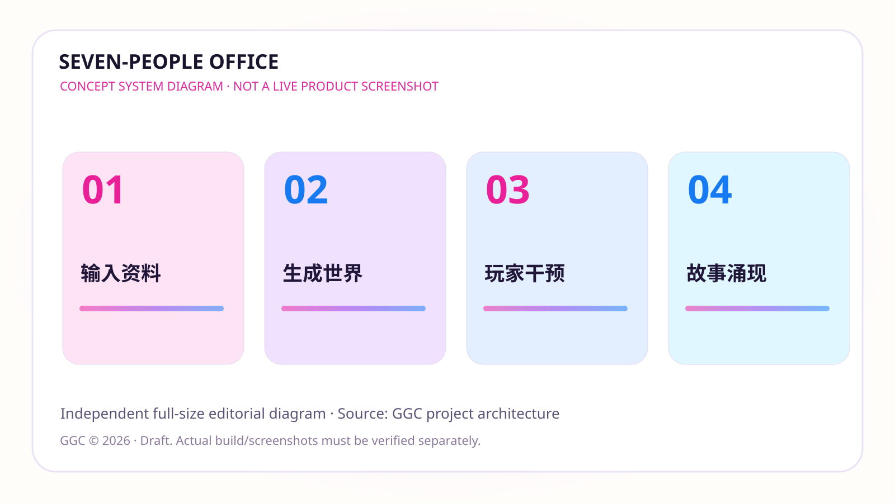
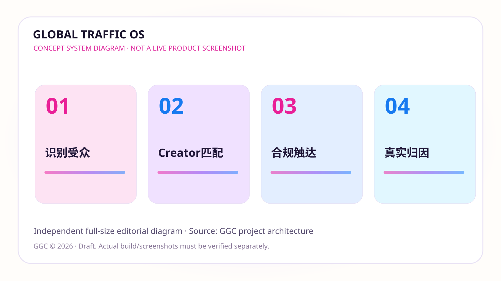

以你确认过的 GGCStyle 源文件与 GitHub Visual Style V2 为准，排除 V6 压缩截图的版式。本页为独立图片的候选审阅图库，不假装这些概念图已在产品实机运行。
游戏发行能力与项目池经营；独立 Steam SaaS 实际上线与发行合同仍需核验。

全幅SVG独立图片 · 这不是现网截图。实际产品图请在私密审阅包中核验原始素材。
塔罗/情绪互动/自我认知；真正牌阵、支付、记忆、占星功能按当前生产版本核验。

全幅SVG独立图片 · 这不是现网截图。实际产品图请在私密审阅包中核验原始素材。
已有脚本、分镜、测试矩阵 PRD；Sample 数据不可当作真实投放成绩。

全幅SVG独立图片 · 这不是现网截图。实际产品图请在私密审阅包中核验原始素材。
用户原创项目图在本地交付包保留原尺寸。文字/资料生成游戏的真实验证仍待完成。

全幅SVG独立图片 · 这不是现网截图。实际产品图请在私密审阅包中核验原始素材。
合规 Creator 发现、匹配、运营与归因。索引联系人 ≠ 已签/自有用户资产。

全幅SVG独立图片 · 这不是现网截图。实际产品图请在私密审阅包中核验原始素材。